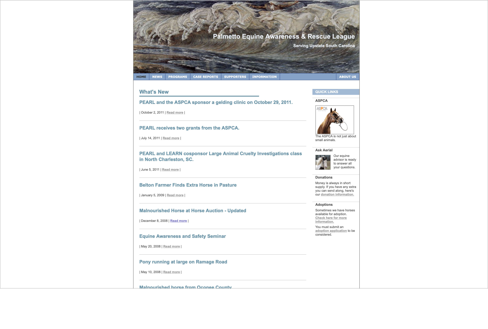
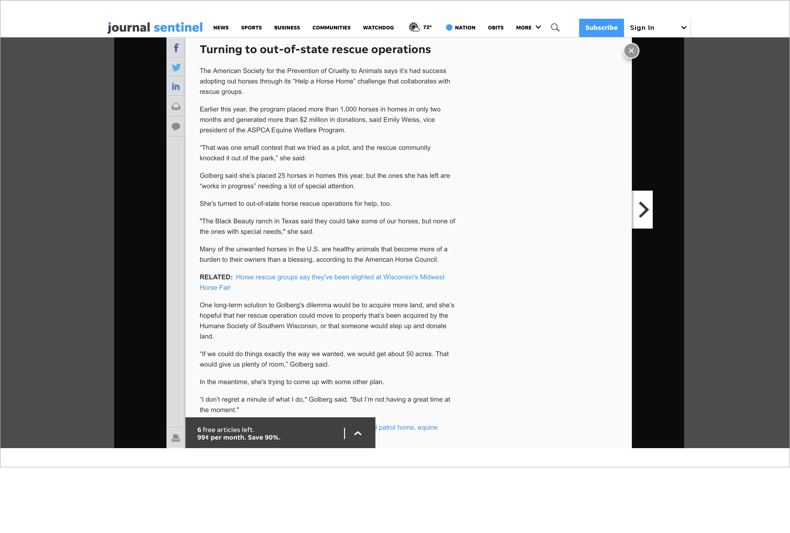
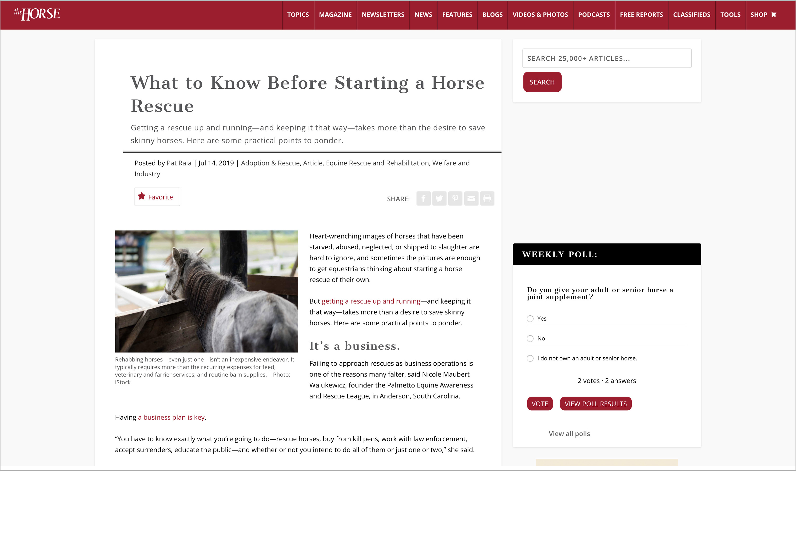
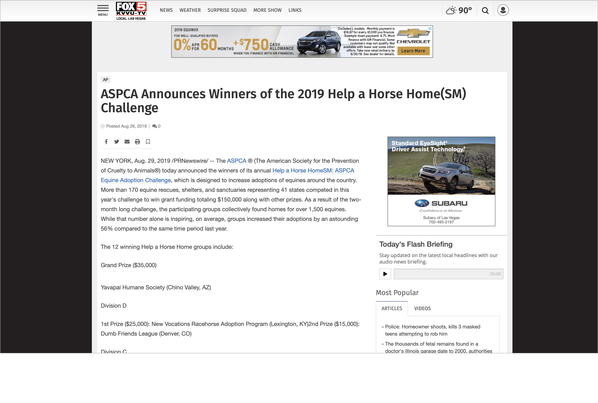
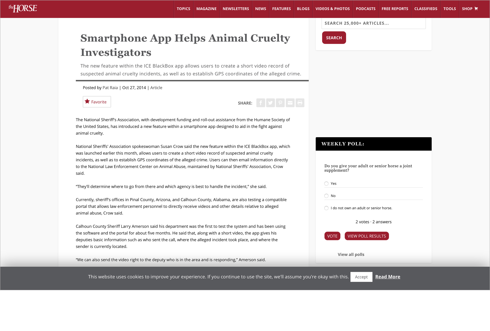
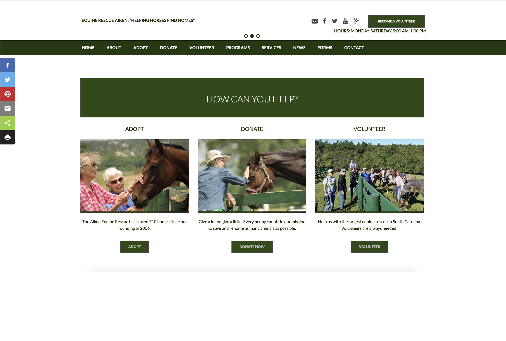
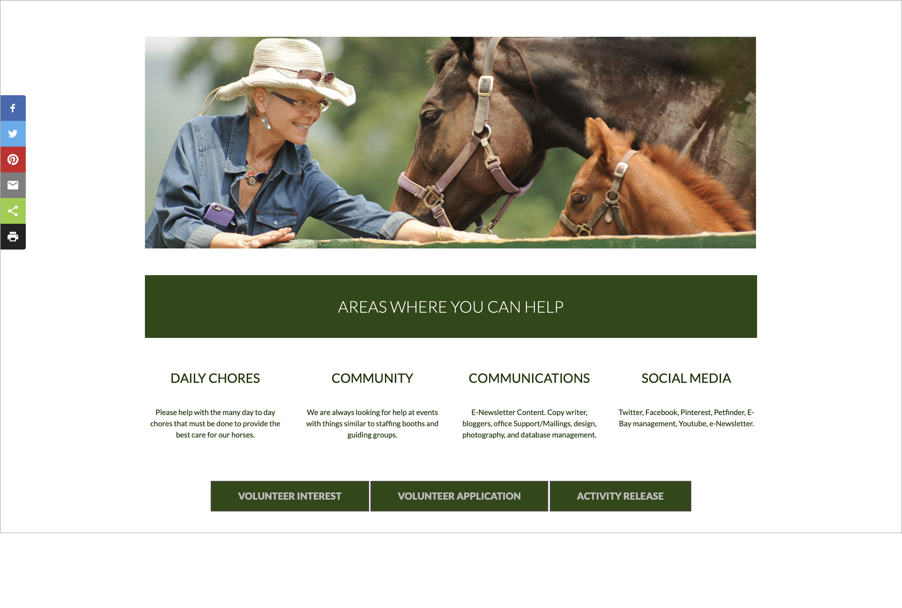
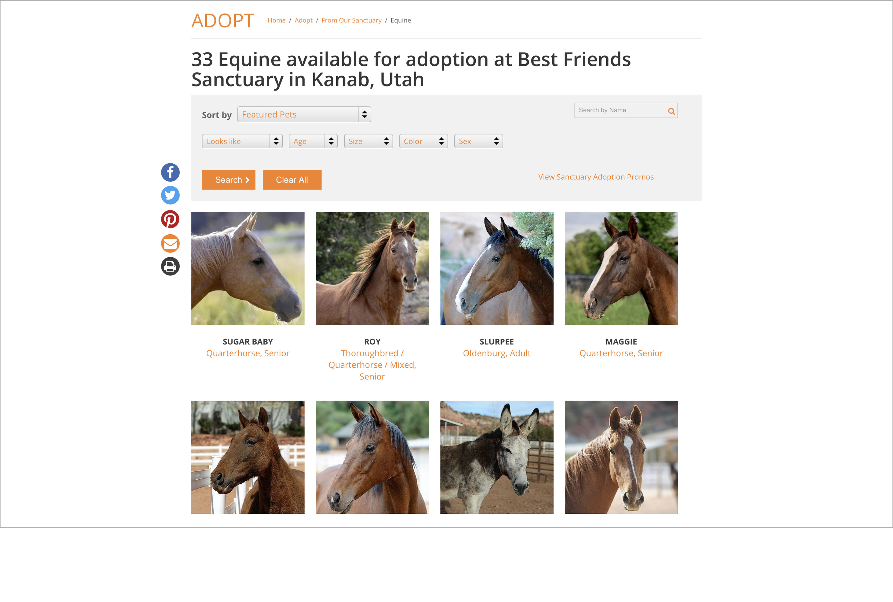

Research
Read on to discover the steps I took during the research process.
Primary Research
Research from the Palmetto Equine Awareness & Rescue League Website

Organization Goal
During the first stage of research, I determined the purpose and goals of the Palmetto Equine Awareness and Rescue League. The purpose of the P.E.A.R.L. Organization is to aid in the welfare and preservation of equine through education and direct rehabilitation. P.E.A.R.L. offers to accomplish this by providing educational seminars, aid to law enforcement and animal control during seizures, and rehabilitative services.

Purpose
Solely funded through donations, P.E.A.R.L. "strives to eliminate abuse and neglect of equines by promoting responsible equine ownership through education and community awareness." P.E.A.R.L. works to rehabilitate abused and neglected equine to revitalize them for adoption or placement. To promote the health of equine, the organization also offers periodical gelding clinics.
Secondary Research
Recent News
To begin my secondary research, I gathered recent news and information regarding abused horses and equine rescues in order to gain knowledge of current practices and events.
 This article by the Journal Sentinel details the nationwide problem of equine abuse and neglect.
This article by the Journal Sentinel details the nationwide problem of equine abuse and neglect.
"It states, "Nationwide, more than 1 million horses have shipped to slaughter since 2007, according to the Equine Rescue Network. Of the estimated 9.2 million horses in the U.S., about 190,000 are considered unwanted."
Thanks to organizations like the ASPCA Equine Welfare Programs that create reward-backed challenges for equine rescues, thousands of equines have been adopted and millions of dollars have been donated.
 Next, I researched the methods of successful equine rescue organizations.
Next, I researched the methods of successful equine rescue organizations.
The Equine Rescue of Aiken focuses on educating animal control officers in order to help them be knowledgeable in cases of equine seizure. They also emphasize the importance and helpfulness of implementing volunteers in the workforce of the rescue.
 Next, I researched effective ways to maintain equine rescues in order to have a firmer grasp on the mechanics and tasks of the operations.
This article interviews the founder of the Palmetto Equine Awareness and Rescue League, Nicole Maubert Walukewicz. She informs that it is crucial to have a plan of action when beginning an equine rescue. This includes choosing to, “rescue horses, buy from kill pens, work with law enforcement, accept surrenders, and educate the public.” These actions are integral to finding and obtaining equine in need of rehabilitation. In order to stay afloat, it is key to be flexible in working with the various challenges of operating equine rescues.Recent Innovations in Equine Rescue
 In this stage of research, I discovered innovative ways to combat equine abuse and neglect.This article by Fox News describes the widely successful "Help a Horse Home Adoption Challenge." The organization's website tells the purpose and impact of the challenge, stating, "Now in its sixth year, the ASPCA’s annual Help a Horse initiative has been a meaningful way for equine rescues, shelters and sanctuaries to increase awareness for their lifesaving work to help at-risk horses by competing to win valuable grant funding and other resources."
By initiating this challege, it significantly raised awareness for the problem of abused and neglected equines, while setting an incentive for equine rescues to advance their amount of adoptions.

If advertised more widely, this innovation could immensely aid in the identification and discovery of abused and neglected horses. Developed in 2014 by the National Sheriffs Association and the Humane Society of the United States, the ICE BlackBox app was created to enable users to easily report instances of animal cruelty. The app’s features allow users to take short videos of suspected animal cruelty, record GPS coordinates, and send them to local law enforcement. With better implementation, this app could help reduce the number of neglected equine.
Solutions from Competitors
In this section of research, I sought out websites of other equine rescues and organizations that used effective principles of design to help ease the use of the provided resources.

Equine Rescue Aiken
Accessible Home Page
One of the competitors of P.E.A.R.L., the website of Equine Rescue Aiken has a very accessible and clear home page. The bulk of the space on the home page is taken up by a large slider revolution that features crisp photos of horses at the rescue. The text on the photo distinctly clarifies the purpose of the organization, and states the number of horses placed since 2006. The navigation bar at the top clearly displays the offered pages on the website. The volunteer button is very visible, emphasizing its importance.
Clear Call to Action
When scrolling down the home page, the navigation bar floats with the scroll. Another useful feature is the inclusion of the call-to-action, "How Can You Help?" It then features the three most important actions for users of the site, "Adopt," "Donate," and "Volunteer." By placing these on the homepage, it creates a clear direction for the user and easy accessibility to the specified actions.
Simple Usability
When clicking on the "Volunteer" page, it immediately shows an economized and clear organization of call-to-actions for the user. The minimality of the elements on the page helps economize the content, allowing the user to quickly find their destination.
Adopt a Horse
Organized Box Elements
The placement of these elements enables a clear and direct view of the horses up for adoption. This design strategy can immensely help increase adoptions by implementing high-quality photography with easy navigation.Market Data

The Palmetto Equine Awareness and Rescue League does not have a very broad marketing outreach. Along with the website, the only other marketing outlet in use is their Facebook account. The photos posted in the early years of the organization show raw, emotion-inducing photos of emaciated horses receiving care from the workers at the Palmetto Equine Awareness and Rescue League. These images can be highly impactful, and would elicit a emotional appeal from audiences if posted more often. The most current posts do not show any current events of the organization. This could cause the organization to appear inactive.
Interviews
During the interview process, I contacted twenty-five people who were connected to PEARL, whether it was through sponsorships, reviews of their services, recommendations, or partnerships. Each of these people either would not respond or answer my questions or stated that they had never heard of the organization. Thankfully, Mrs. Walukewicz and Dr. Stafford replied with valuable answers.
Nicole Walukewicz | Owner/Chair of PEARL
Based on Mrs. Walukewicz’s response, I was able to determine the exact goals of PEARL, which are to provide rehabilitation to abused horses, attract adoptions, and educate law enforcement. I learned that the rescue is very small, with only four horses being rehabilitated currently. She also explained how their target audience is primarily focused on horse owners, youth, and the public. This drastically helped me narrow down the target audience to the most important groups of people. Surprisingly, I found that Mrs. Walukewicz does not want donations anymore. This directly impacts the goals of the website. I also determined from the interview that PEARL definitely wants to hire volunteers and has a specific hiring process for them. This could be a primary focus of the website. She also kept mentioning how she would like testimonials and case studies to be important aspects of the website, so I will definitely incorporate that. I also discovered that they do not accept field trips from schools, which narrows down the users of the site.
Dr. Keith Stafford | User/Primary Veterinarian of PEARL
While Dr. Stafford is not necessarily a user, he was the only other person who would respond. Nonetheless, his feedback was very helpful. Because he has never used PEARL’s website, he was a little confused and flustered, but he did provide some helpful insights. Similar to Mrs. Walukewicz, he reiterated how testimonials would be useful to site users. He also discussed the importance of promoting their involvement of passing legislature related to equine rescue, which is something new that I had not come across in my research. This could be an emphasis in the website goals.